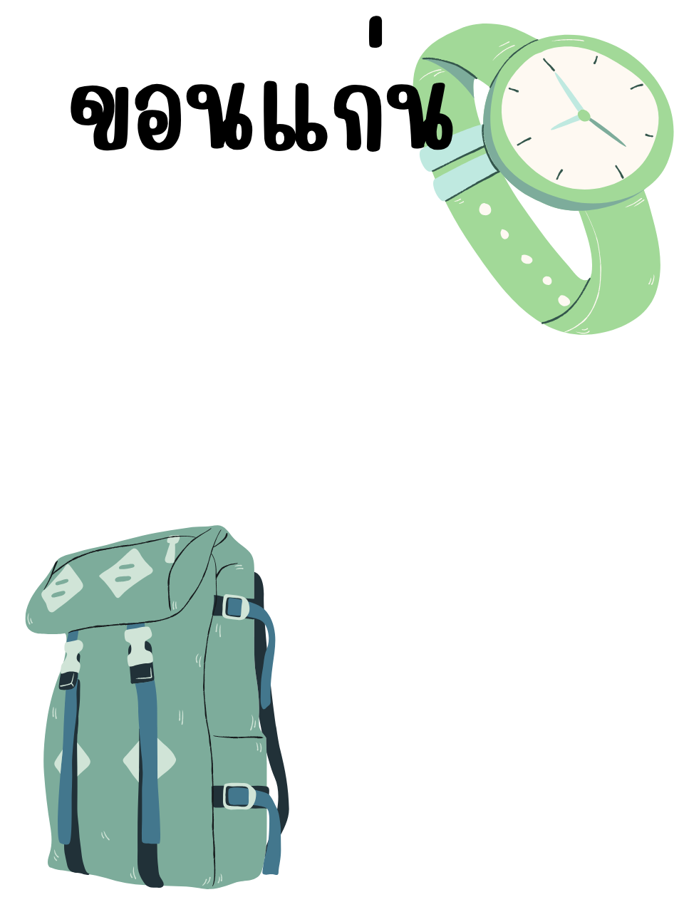

⏳ กำลังโหลดระบบ AI...
SNAPSHOT STUDIO
ระบบตรวจจับท่าทางอัตโนมัติ (Touchless Kiosk)

5
👋
ปัดซ้าย / ขวา
เพื่อเปลี่ยนกรอบรูป
✌️
ชู 2 นิ้ว ค้างไว้
เพื่อเริ่มนับถอยหลังถ่ายภาพ
สแกนเพื่อดาวน์โหลดภาพ!
ระบบจะกลับสู่หน้าหลักใน
15
วินาที